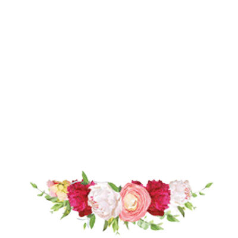

Welcome
As a family owned and operated business, John's Flowerie has been proudly serving Somerville since 1996. We are committed to offering only the finest floral arrangements and gifts, backed by service that is friendly and prompt. Because all of our customers are important, our professional staff is dedicated to making your experience a pleasant one. That is why we always go the extra mile (literally! We have no maximum delivery range.) to make your floral gift perfect.


Store Hours
| Day | Hours |
|---|---|
| Sunday | 9:00 - 12:00 |
| Monday | 8:00 - 7:00 |
| Tuesday | 8:00 - 7:00 |
| Wednesday | 8:00 - 7:00 |
| Thursday | 8:00 - 7:00 |
| Friday | 8:00 - 7:00 |
| Saturday | 9:00 - 5:00 |
Testimonials
Thank you so very much for the beautiful casket cover you did for my mom, Evelyn Thompson.
It was splendid! She loved flowers and would feel so honored!
You all did an amazing job on my daughter's wedding flowers. I appreciate all you have done for our family over the years. You also often delivered flowers for special days to my mom.
You are a blessing!
- Jim Bean
The arrangement you did for Clema's funeral was gorgeous! I have told everyone where it came from and wanted you to know how much I appreciate your help. It was exactly as I had envisioned and I know Clema would have love it!
- David Wilson
I just wanted to say thank you for making such gorgeous arrangements for our birthday celebration. I couldn't get over how perfect they were for the party. You did a fantastic job, and I appreciate it very much.
- Sara Siqueira
As always, John's Flowerie delivered a beautiful bouquet that my husband ordered for Mothers' Day. I am so impressed that the flowers were fresh and didn't bloom fully for about a day, when the filled the house with fragrance. They're beautiful and the aroma throughout the house is heavenly. You ALWAYS do an amazing job; thank you so much. The delivery was above and beyond: I was not at home when the delivery was made, but when I arrived home I found a notice in the mailbox regarding the delivery, as well as a voice message on my phone, notifying me of the time and location of the bouquet. Super service!! Thank you all so much for the service you provide to the Smyrna community. I formerly worked at Emory-Adventist Hospital and saw flowers from your shop almost daily. They were spectacular. Best wishes,
- Mahvash Hassan
Thank you for being a special part of Allie's wedding! You did a beautiful job on all those vases of flowers! We have had so many compliments. The flowers you did for the rehearsal dinner were gorgeous too! you have a special talent and such a sweet, caring and professional way about you. I refer people to John's Flowerie all the time. Thank you again- it was a joy to work with you! Love,
- Valerie Niece